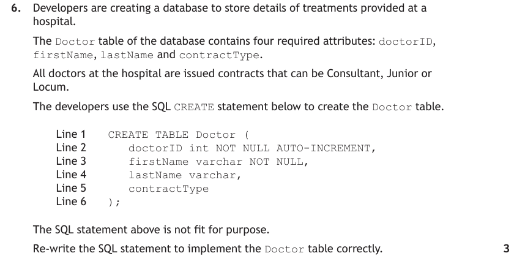
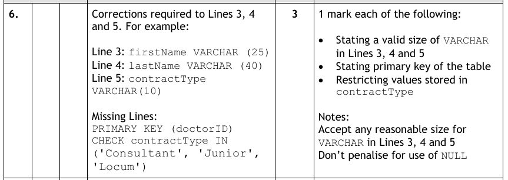

DDL — Defining the Structure
SQL statements divide into two families. Data Manipulation Language (DML) works with the data itself — SELECT, INSERT, UPDATE, DELETE, which you have used since National 5. Data Definition Language (DDL) is new at Advanced Higher: it creates and removes the database structure itself. At Higher you were always handed a pre-populated database; now you build it — implementing your data dictionary, constraint by constraint.
Exam questions go both directions: write a CREATE statement from a description or data dictionary, or identify the errors in a statement you're shown. Both need the same thing — fluency in the constraint syntax below.
Key Terms
CREATE DATABASE
A database is a structured set of data — and the first step is creating the (empty) database itself:
CREATE DATABASE TravelAgency;That's the whole statement. The marks are in what comes next.
CREATE TABLE & Its Constraints
Once the database exists, each table's structure is built with CREATE TABLE — a list of field names, each with its SQL data type and any constraints:
CREATE TABLE tableName (
fieldName1 dataType constraint(s),
fieldName2 dataType constraint(s),
...
);The five constraints
| Constraint | Purpose | Syntax |
|---|---|---|
| PRIMARY KEY | Uniquely identifies each record | fieldName dataType PRIMARY KEYor, for a compound key, a separate clause at the end: PRIMARY KEY (field1, field2, ...) |
| FOREIGN KEY | Links two tables by referencing another table's primary key | FOREIGN KEY (fieldName) REFERENCES tableName(fieldName) |
| NOT NULL | Field must always contain a value (presence check) | fieldName dataType NOT NULL |
| CHECK | All values must satisfy a condition (range / restricted choice) | fieldName dataType CHECK(condition) |
| AUTO_INCREMENT | Generates the next unique number automatically (surrogate keys) | fieldName dataType AUTO_INCREMENT |
Constraints stack — several can apply to one field: resortID int NOT NULL PRIMARY KEY. And notice how each constraint implements a validation column from the data dictionary: required → NOT NULL; range → CHECK with comparisons; restricted choice → CHECK … IN(list); auto increment → AUTO_INCREMENT.
Full Example — Building the Travel Agency Database
These statements implement the travel agency data dictionary exactly — compare them side by side and you can see every dictionary row become a line of SQL:
CREATE TABLE Resort (
resortID int NOT NULL PRIMARY KEY,
resortName varchar(20) NOT NULL,
resortType varchar(20) NOT NULL CHECK (resortType IN
('coastal', 'city', 'island', 'country'))
);CREATE TABLE Hotel (
hotelRef varchar(4) NOT NULL PRIMARY KEY,
hotelName varchar(20) NOT NULL,
resortID int NOT NULL,
starRating int NOT NULL CHECK(starRating >= 1 AND starRating <= 5),
seasonStartDate date,
mealPlan varchar(17) NOT NULL CHECK(mealPlan IN('Room Only',
'Bed and Breakfast', 'Half Board', 'Full Board')),
checkInTime time NOT NULL,
pricePersonNight float(6,2) NOT NULL CHECK(pricePersonNight >= 50
AND pricePersonNight <= 250),
FOREIGN KEY (resortID) REFERENCES Resort(resortID)
);CREATE TABLE Customer (
customerNo int AUTO_INCREMENT PRIMARY KEY,
firstname varchar(20) NOT NULL,
surname varchar(20) NOT NULL,
address varchar(40) NOT NULL,
town varchar(20) NOT NULL,
postcode varchar(8) NOT NULL
);CREATE TABLE Booking (
hotelRef varchar(4) NOT NULL,
customerNo int NOT NULL,
startDate date NOT NULL,
numberNights int NOT NULL CHECK(numberNights >= 1),
numberInParty int NOT NULL CHECK(numberInParty >= 1),
PRIMARY KEY (customerNo, hotelRef, startDate),
FOREIGN KEY (customerNo) REFERENCES Customer(customerNo),
FOREIGN KEY (hotelRef) REFERENCES Hotel(hotelRef)
);Booking shows why the order of the tables matters: its foreign keys reference Customer and Hotel, so those tables must be created first. Notice too how the weak entity shows up in the SQL — the compound primary key in its separate clause, built from the owners' keys.
DROP — Handle With Care
The DROP statement permanently removes structure:
DROP TABLE tableName;
DROP DATABASE databaseName;DROP TABLE deletes the named table and all the data stored in it; DROP DATABASE removes the entire database. Neither can be undone — which is why the DROP statement is often exploited by cyber criminals in SQL injection attacks.
DELETE FROM Booking; removes the records but the empty table remains. DROP TABLE Booking; removes the table structure itself. Exam questions love this distinction.Worked Example

Approach: work field by field against the description or data dictionary — name, SQL data type (with size for varchar/float), then the constraints. Save the key clauses for last: is the primary key single or compound? Which fields reference other tables?

Test Yourself
Attempt each question first, then expand the marking instructions to check your answer.
A candidate writes the following statement to implement a Member table (memberID: auto-incrementing primary key; name: text up to 30 characters, required; age: whole number that must be at least 16):
CREATE TABLE Member (
memberID int PRIMARY KEY,
name varchar,
age int CHECK(age > 16)
);Identify three errors in this statement. (3 marks)
Marking Instructions
memberIDis missing AUTO_INCREMENT. (1 mark)varcharhas no size — it must bevarchar(30)— andnameis missing NOT NULL (either error acceptable). (1 mark)- The CHECK should be
age >= 16—age > 16wrongly rejects 16-year-olds. (1 mark)
Using the data dictionary below, write the SQL statement to create the Screening table. The Film table already exists with primary key filmID.
| Attribute | Key | Type | Size | Required | Validation |
|---|---|---|---|---|---|
| screeningID | PK | integer | yes | Auto increment | |
| filmID | FK | integer | yes | Existing filmID from Film | |
| screenNo | integer | yes | Range: >=1 and <=9 | ||
| startTime | time | yes |
(4 marks)
Marking Instructions
CREATE TABLE Screening (
screeningID int AUTO_INCREMENT PRIMARY KEY,
filmID int NOT NULL,
screenNo int NOT NULL CHECK(screenNo >= 1 AND screenNo <= 9),
startTime time NOT NULL,
FOREIGN KEY (filmID) REFERENCES Film(filmID)
);Award 1 mark each for: correct CREATE TABLE structure with field names and types; primary key with auto increment; the CHECK range constraint (with NOT NULLs); the foreign key clause referencing Film(filmID).